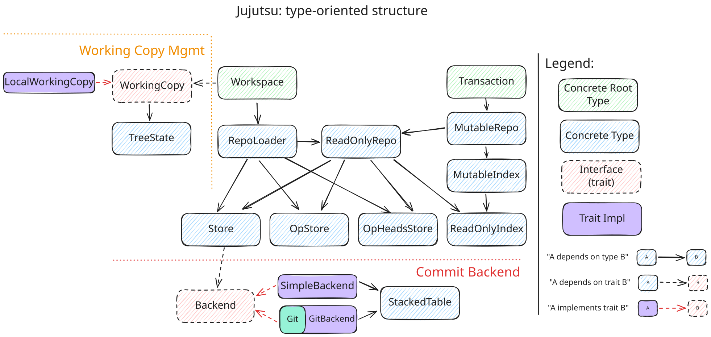

Architecture¶
Data model¶
The commit data model is similar to Git's object model , but with some differences.
Separation of library from UI¶
The jj binary consists of two Rust crates: the library crate (jj-lib) and
the CLI crate (jj-cli). The library crate is currently only used by the CLI
crate, but it is meant to also be usable from a GUI or TUI, or in a server
serving requests from multiple users. As a result, the library should avoid
interacting directly with the user via the terminal or by other means; all
input/output is handled by the CLI crate 1. Since the library crate is meant
to usable in a server, it also cannot read configuration from the user's home
directory, or from user-specific environment variables.
A lot of thought has gone into making the library crate's API easy to use, but not much has gone into "details" such as which collection types are used, or which symbols are exposed in the API.
Storage-independent APIs¶
One overarching principle in the design is that it should be easy to change where data is stored. The goal was to be able to put storage on local-disk by default but also be able to move storage to the cloud at Google (and for anyone). To that end, commits (and trees, files, etc.) are stored by the commit backend, operations (and views) are stored by the operation backend, the heads of the operation log are stored by the "op heads" backend, the commit index is stored by the index backend, and the working copy is stored by the working copy backend. The interfaces are defined in terms of plain Rust data types, not tied to a specific format. The working copy doesn't have its own trait defined yet, but its interface is small and easy to create traits for when needed.
The commit backend to use when loading a repo is specified in
the .jj/repo/store/type file. There are similar files for the other backends
(.jj/repo/index/type, .jj/repo/op_store/type, .jj/repo/op_heads/type).
Design of the library crate¶
Overview¶
Here's a diagram showing some important types in the library crate, and how they
relate. For example, given a Workspace, you can use it to get a WorkingCopy
or a RepoLoader. A Transaction is required to acquire a MutableRepo, etc.
The following sections describe each component.

This diagram was created with Excalidraw. You can get a copy of it at this location, and Right Click > "Copy to Clipboard as SVG".
Backend¶
The Backend trait defines the interface each
commit backend needs to implement. The current in-tree commit backends
are GitBackend
and SimpleBackend.
Since there are non-commit backends, the Backend trait should probably be
renamed to CommitBackend.
GitBackend¶
The GitBackend stores commits in a Git repository. It uses
gitoxide to read and write commits
and refs.
To prevent GC from deleting commits that are still reachable from the operation
log, the GitBackend stores a ref for each commit in the operation log in
the refs/jj/keep/ namespace.
Commit data that is available in Jujutsu's model but not in Git's model is
stored in a StackedTable in .jj/repo/store/extra/. That is currently the
change ID and the list of predecessors. For commits that don't have any data in
that table, which is any commit created by git, we use an empty list as
predecessors, and the bit-reversed commit ID as change ID.
Because we use the Git Object ID as commit ID, two commits that differ only in their change ID, for example, will get the same commit ID, so we error out when trying to write the second one of them.
SimpleBackend¶
The SimpleBackend is just a proof of concept. It stores objects addressed by
their hash, with one file per object.
Store¶
The Store type wraps the Backend and returns wrapped types for commits and
trees to make them easier to use. The wrapped objects have a reference to
the Store itself, so you can do e.g. commit.parents() without having to
provide the Store as an argument.
The Store type also provides caching of commits and trees.
ReadonlyRepo¶
A ReadonlyRepo represents the state of a repo at a specific operation. It
keeps the view object associated with that operation.
The repository doesn't know where on disk any working copies live. It knows, via the view object, which commit is supposed to be the current working-copy commit in each workspace.
MutableRepo¶
A MutableRepo is a mutable version of ReadonlyRepo. It has a reference to
its base ReadonlyRepo, but it has its own copy of the view object and lets the
caller modify it.
Transaction¶
The Transaction object has a MutableRepo and metadata that will go into the
operation log. When the transaction commits, the MutableRepo becomes a view
object in the operation log on disk, and the Transaction object becomes an
operation object. In memory, Transaction::commit() returns a
new ReadonlyRepo.
RepoLoader¶
The RepoLoader represents a repository at an unspecified operation. You can
think of as a pointer to the .jj/repo/ directory. It can create
a ReadonlyRepo given an operation ID.
TreeState¶
The TreeState type represents the state of the files in a working copy. It
keep track of the mtime and size for each tracked file. It knows the TreeId
that the working copy represents. It has a snapshot() method that will use the
recorded mtimes and sizes and detect changes in the working copy. If anything
changed, it will return a new TreeId. It also has checkout() for updating
the files on disk to match a requested TreeId.
The TreeState type supports sparse checkouts. In fact, all working copies are
sparse; they simply track the full repo in most cases.
WorkingCopy¶
The WorkingCopy type has a TreeState but also knows which WorkspaceName it
has and at which operation it was most recently updated.
Workspace¶
The Workspace type represents the combination of a repo and a working copy
(like Git's worktree concept).
The repo view at the current operation determines the desired working-copy
commit in each workspace. The WorkingCopy determines what is actually in the
working copy. The working copy can become stale if the working-copy commit was
changed from another workspace (or if the process updating the working copy
crashed, for example).
Git¶
The git module contains functionality for interoperating with a Git repo, at a
higher level than the GitBackend. The GitBackend is restricted by
the Backend trait; the git module is specifically for Git-backed repos. It
has functionality for importing refs from the Git repo and for exporting to refs
in the Git repo. It also has functionality for pushing and pulling to/from Git
remotes.
Revsets¶
A user-provided revset expression string goes through a few different stages to be evaluated:
- Parse the expression into a
RevsetExpression, which is close to an AST - Resolve symbols and functions like
tags()into specific commits. After this stage, the expression is still aRevsetExpression, but it won't have anyCommitRefvariants in it. - Resolve visibility. This stage resolves
visible_heads()andall()and produces aResolvedExpression. - Evaluate the
ResolvedExpressioninto aRevset.
This evaluation step is performed by Index::evaluate_revset(), allowing
the Revset implementation to leverage the specifics of a custom index
implementation. The first three steps are independent of the index
implementation.
StackedTable¶
StackedTable (actually ReadonlyTable and MutableTable) is a simple disk
format for storing key-value pairs sorted by key. The keys have to have the same
size but the values can have different sizes. We use our own format because we
want lock-free concurrency and there doesn't seem to be an
existing key-value store we could use.
The file format contains a lookup table followed by concatenated values. The lookup table is a sorted list of keys, where each key is followed by the associated value's offset in the concatenated values.
A table can have a parent table. When looking up a key, if it's not found in the current table, the parent table is searched. We never update a table in place. If the number of new entries to write is less than half the number of entries in the parent table, we create a new table with the new entries and a pointer to the parent. Otherwise, we copy the entries from the parent table and the new entries into a new table with the grandparent as the parent. We do that recursively so parent tables are at least 2 times as large as child tables. This results in O(log N) amortized insertion time and lookup time.
There's no garbage collection of unreachable tables yet.
The tables are named by their hash. We keep a separate directory of pointers to the current leaf tables, in the same way as we do for the operation log.
Design of the CLI crate¶
Templates¶
The concept is copied from Mercurial, but the syntax is different. The main
difference is that the top-level expression is a template expression, not a
string like in Mercurial. There is also no string interpolation (e.g.
"Commit ID: {node}" in Mercurial).
Diff-editing¶
Diff-editing works by creating two very sparse working copies, containing only the files we want the user to edit. We then let the user edit the right-hand side of the diff. Then we simply snapshot that working copy to create the new tree.
-
There are a few exceptions, such as for messages printed during automatic upgrades of the repo format ↩